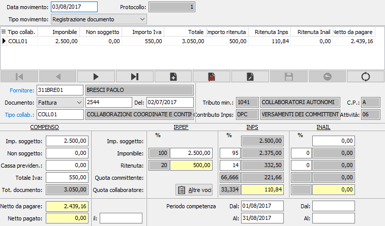

Manutenzione movimenti
La maschera di manutenzione movimenti è la stessa utilizzata anche in fase di registrazione prima nota contabile.

DATA MOVIMENTO: data di registrazione contabile dell’operazione.
PROTOCOLLO: protocollo interno di registrazione
TIPO MOVIMENTO: definisce il tipo di movimento in corso di registrazione. Valori ammessi: Documento, Pagamento.
DATA VERSAMENTO: campo in sola visualizzazione; riporta la data del versamento, nel caso questo sia stato effettuato; visibile solo su movimenti di tipo Registrazione pagamento.
FORNITORE: codice alfanumerico di 8 caratteri presente in archivio Dati percipienti per individuare il percipiente del compenso in esame. Sul campo è attivo il tasto funzione F12 che permette di visualizzare l’elenco delle fatture del percipiente non ancora pagate. Sul campo sono attive le funzioni di vista (F9) e di manutenzione (CTRL+W) sulla tabella stessa.
TIPO DOCUMENTO: definisce il tipo di documento emesso dal professionista / collaboratore. Valori ammessi: Nessuno; Fattura; Ricevuta
NUMERO DOCUMENTO: inserire, se conosciuto, il numero del documento emesso dal percipiente.
DATA DOCUMENTO: inserire, se conosciuta, la data del documento emesso dal percipiente.
TIPO COLLABORAZIONE: codice alfanumerico di 8 caratteri presente in tabella Tipi collaborazione per definire il tipo di collaborazione prestata. Il tipo di collaborazione scelto definisce i trattamenti, le percentuali di assoggettamento e le aliquote di ritenuta o contributo da applicare. Sul campo sono attive le funzioni di vista (F9) e di manutenzione (CTRL+W) sulla tabella stessa.
COMPENSO: indicare l’importo degli onorari o compensi soggetti a ritenuta d’acconto e/o a contribuzione INPS/INAIL.
NON SOGGETTO: indicare l’eventuale importo delle spese e/o delle anticipazioni non soggetti a ritenuta d’acconto e/o a contribuzione INPS/INAIL.
IVA: campo indicare l’eventuale importo dell’Iva.
BASE IMPONIBILE R.A.: viene automaticamente riproposto l’importo degli onorari o compensi soggetti a ritenuta d’acconto presente nel campo “Compenso”.
% ASSOGGETTAMENTO R.A.: identifica la percentuale di assoggettamento presente in tabella Codici tributo. relativamente al corrispondente codice aliquota contenuto nel Tipo collaborazione in uso.
IMPONIBILE R.A.: contiene l’imponibile R.A. determinato dall’applicazione della percentuale di assoggettamento alla base imponibile R.A.
% RITENUTA R.A.: visualizza l’aliquota di R.A. presente in tabella Codici tributo relativamente al corrispondente codice aliquota contenuto nel Tipo collaborazione in uso.
IMPORTO R.A.: indica l’importo di R.A. derivante dall’applicazione dell’aliquota di R.A. sull’imponibile R.A.
IMPORTO SOGGETTO INPS: contiene, se il tipo collaborazione in uso prevede un trattamento INPS, l’importo dei compensi soggetti a contributo INPS presente nel campo “Compenso”.
IMPONIBILE INPS: indicare, se il tipo collaborazione in uso prevede un trattamento INPS. l’imponibile Inps soggetto a contributo.
IMPORTO CONTRIBUTO INPS: indicare, se il tipo collaborazione in uso prevede un trattamento INPS, l’importo del contributo INPS.
IMPORTO CONTRIBUTO INPS A CARICO AZIENDA: contiene, se il tipo collaborazione in uso prevede un trattamento INPS, la quota parte di contributo a carico del committente in base alla percentuale a carico committente reperibile nel codice Inps indicato nel Tipo collaborazione in uso.
IMPORTO CONTRIBUTO INPS A CARICO PERCIPIENTE: contiene, se il tipo collaborazione in uso prevede un trattamento INPS, la quota parte di contributo a carico del collaboratore in base alla percentuale a carico collaboratore reperibile nel codice Inps indicato nel Tipo collaborazione in uso.
INPS DATA INIZIO PERIODO: campo data, accessibile se il Tipo collaborazione scelto prevede il trattamento INPS, per indicare la data di inizio competenza del compenso in esame. Il dato serve per la compilazione del modello Glad.
INPS DATA FINE PERIODO: campo data, accessibile se il Tipo collaborazione scelto prevede il trattamento INPS, per indicare la data di fine competenza del compenso in esame. Il dato serve per la compilazione del modello Glad.
BASE IMPONIBILE INAIL: indicare, se il Tipo collaborazione scelto prevede il trattamento INAIL, la base imponibile per il calcolo dell’INAIL.
% ASSOGGETTAMENTO INAIL: viene visualizzata la percentuale di assoggettamento prevista dal Codice Inail indicato nei Dati percipiente del collaboratore in esame.
IMPONIBILE INAIL: contiene l’imponibile Inail su cui verrà calcolato il contributo:
% RITENUTA INAIL: indica l’aliquota di premio prevista dal codice Posizione Inail contenuto nei Dati aggiuntivi professionisti del percipiente in esame.
IMPORTO RITENUTA INAIL: indica il totale del premio Inail ottenuto per applicazione della percentuale di ritenuta all’imponibile Inail. Il valore può essere modificato dall’utente.
IMPORTO RITENUTA INAIL A CARICO PERCIPIENTE: indica la quota parte di premio a carico del collaboratore in base alla percentuale a carico collaboratore reperibile nel codice Inail presente nei Dati percipienti del collaboratore attivo.
IMPORTO RITENUTA INAIL A CARICO AZIENDA: indica la quota parte di premio a carico del committente in base alla percentuale a carico committente reperibile nel codice Inail presente nei Dati percipienti del collaboratore attivo.
INAIL DATA INIZIO PERIODO: campo data, accessibile se il Tipo collaborazione scelto prevede il trattamento INAIL, per indicare la data di inizio competenza del compenso in esame. Il dato serve per la riparametrazione dei minimali e dei massimali assicurativi.
INAIL DATA FINE PERIODO: campo data, accessibile se il Tipo collaborazione scelto prevede il trattamento INAIL, per indicare la data di inizio competenza del compenso in esame. Il dato serve per la riparametrazione dei minimali e dei massimali assicurativi.
NETTO DA PAGARE: indica il netto da pagare per differenza fra il totale documento e le ritenute a carico del percipiente.
NETTO PAGATO: è l’importo effettivamente pagato, normalmente corrisponde al campo precedente e deve essere compilato in fase di registrazione del pagamento.
DATA PAGAMENTO: nel caso di registrazione pagamento indicare la data di effettivo pagamento, da cui scatta l’obbligo impositivo per l’azienda, altrimenti il campo resta vuoto.